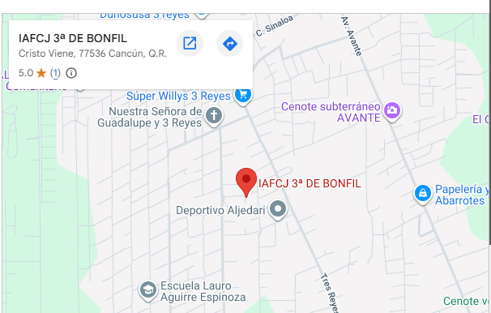

Si encontraste este sticker, esto no es una casualidad. Es un mensaje directo para tu vida hoy.
Pasamos los días persiguiendo el éxito, el dinero o la aprobación de los demás, llenando nuestra agenda para no enfrentar el vacío del corazón. Pero cuando el ruido se apaga, sabemos que algo está roto por dentro. Dios nos creó para conocerle y vivir en perfecta armonía con Su justicia, pero decidimos ignorarle y gobernar nuestra propia vida.
La Biblia llama a esto Pecado: no es solo cometer errores, es romper nuestra relación con el Dios Santo que nos dio el aliento de vida. Y ante Sus ojos perfectos, nadie puede esconderse. Isaías 59:2 — "Vuestras iniquidades han hecho división entre vosotros y vuestro Dios."
A veces pensamos que somos "buenas personas" porque no le hacemos daño extremo a nadie. Sin embargo, Dios no nos juzga comparándonos con los demás, sino con Su propia perfección moral. Bajo ese estándar, nuestras mentiras, el orgullo, los malos pensamientos y el egoísmo nos declaran judicialmente culpables ante Su tribunal.
Un Dios perfectamente justo no puede ignorar la maldad o la indiferencia humana. Si un juez humano perdona criminales por "buena gente", sería corrupto. Dios es un juez perfectamente limpio.
Romanos 3:23 — "Por cuanto todos pecaron, y están destituidos de la gloria de Dios."Ninguna buena acción del presente puede borrar los delitos del pasado. Ir a la iglesia, hacer caridad o tener una religión no paga nuestra deuda legal con el Creador.
Gálatas 2:16 — "El hombre no es justificado por las obras de la ley."El salario legal de vivir separados de Dios en la tierra es permanecer eternamente separados de Él después de la muerte, bajo Su justo juicio.
Romanos 6:23 — "Porque la paga del pecado es muerte."Frente a esta quiebra legal, los esfuerzos del hombre por auto-salvarse resultan inútiles. Las buenas obras, la moralidad y la religiosidad externa son incapaces de limpiar la mancha del pecado o revocar la sentencia dictada por el Juez Supremo:
Aquí es donde irrumpe el Evangelio: la noticia más extraordinaria de la historia. Dios, sabiendo que estábamos completamente incapacitados para salvarnos, intervino directamente. En una demostración real de amor, **Dios se manifestó en carne en la persona de Jesucristo**, asumiendo nuestra condición para rescatarnos desde dentro.
Jesús vivió la vida perfecta que tú y yo debimos vivir, y en la cruz, **Él tomó tu lugar de culpabilidad**. Él absorbió el castigo y la sentencia legal que te correspondía, pagando tu deuda por completo. Tres días después, resucitó de entre los muertos, demostrando que la justicia fue satisfecha y abriendo la única puerta de escape. 1 Timoteo 3:16 — "Dios fue manifestado en carne." Romanos 5:8 — "Mas Dios muestra su amor para con nosotros, en que siendo aún pecadores, Cristo murió por nosotros."
La salvación es la obra viva del único Dios que se ha dado a conocer plenamente en Jesucristo, actuando en la historia para rescatar al hombre y llevarlo a una relación real con Él:
La obra de Cristo en la cruz ya está terminada, pero la salvación no es automática. No basta con saber esto mentalmente ni sentir una emotion pasajera. Dios te confronta hoy de manera urgente y te demanda una respuesta real. Necesitas venir a Cristo.
Abandona la excusa de tus "buenas obras". Confiésale al Creador que has vivido de espaldas a Él, quebrantando Su ley y que eres culpable ante Su tribunal.
Salmo 51:3 — "Porque yo reconozco mis rebeliones, y mi pecado está siempre delante de mí."Arrepentirse (Metanoia) significa un cambio radical de mentalidad y de dirección. Es decidir renunciar a tu rebelión, a tus pecados y al control de tu propia vida, para rendirte voluntariamente a Su señorío.
Hechos 3:19 — "Así que, arrepentíos y convertíos, para que sean borrados vuestros pecados."Cree de todo corazón que Jesús pagó tu condena personal en la cruz. No confíes en religiones, confía en la persona de Cristo como tu único Salvador.
Juan 14:6 — "Yo soy el camino, y la verdad, y la vida; nadie viene al Padre, sino por mí."Ignorar este mensaje es tomar la decisión de presentarte solo ante el tribunal de Dios el día que mueras, cargando con el peso total de tus propios delitos. El tiempo es un recurso prestado. El mismo Dios que hoy te extiende los brazos con paciencia y misericordia, es el Juez justo del mañana.
"El que cree en el Hijo tiene vida eterna; pero el que rehúsa creer en el Hijo no verá la vida, sino que la ira de Dios está sobre él."
Juan 3:36No estás solo en este camino. Si necesitas hablar con alguien, compartir tus dudas o que oremos por ti, déjanos tus datos. Te contactaremos directamente a tu número (llamada o WhatsApp).

Ubicación de nuestra comunidad coordenadas: 21.0997119, -86.9411894. ¡Eres bienvenido!